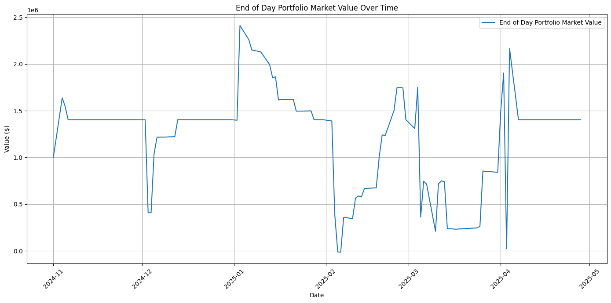

import io
import requests
import numpy as np
import pandas as pd
import shinybroker as sb
import matplotlib.pyplot as plt
from bs4 import BeautifulSoupCollecting Data
asset_symbols = ['AAPL', 'MSFT', 'JPM', 'XOM', 'JNJ', 'PG', 'NVDA', 'CAT', 'HD', 'AMZN']def calc_trd_prd(timestamps, freq = 'M'):
if freq == 'W':
return [ts.isocalendar()[0] + ts.isocalendar()[1] / 100 for ts in timestamps]
elif freq == 'M':
return [ts.year + ts.month / 100 for ts in timestamps]import os
root = os.getcwd()
data_root = os.path.join(root, 'HistoryData')
if not os.path.exists(data_root):
os.makedirs(data_root)
print('HistoryData directory created')
else:
print('HistoryData folder already exists')
daily_data_dict = {}
hourly_data_dict = {}
daily_iv_dict = {}
for symbol in asset_symbols:
print(f"\n Fetching: {symbol}")
contract = sb.Contract({
'symbol': symbol,
'secType': "STK",
'exchange': "SMART",
'currency': "USD"
})
df_daily = sb.fetch_historical_data(
contract=contract,
barSizeSetting="1 day",
durationStr="8 M"
)['hst_dta']
df_hourly = sb.fetch_historical_data(
contract=contract,
barSizeSetting="1 hour",
durationStr="8 M"
)['hst_dta']
df_daily_iv = sb.fetch_historical_data(
contract=contract,
barSizeSetting="1 day",
durationStr="10 M",
whatToShow="OPTION_IMPLIED_VOLATILITY"
)['hst_dta']
df_daily['trd_prd'] = calc_trd_prd(df_daily['timestamp'])
df_hourly['trd_prd'] = calc_trd_prd(df_hourly['timestamp'])
df_daily_iv['trd_prd'] = calc_trd_prd(df_daily_iv['timestamp'])
df_daily.to_csv(os.path.join(data_root, f'{symbol}_daily.csv'))
df_daily.to_csv(os.path.join(data_root, f'{symbol}_hourly.csv'))
df_daily.to_csv(os.path.join(data_root, f'{symbol}_iv.csv'))
daily_data_dict[symbol] = df_daily
hourly_data_dict[symbol] = df_hourly
daily_iv_dict[symbol] = df_daily_iv
print(daily_data_dict)
print(hourly_data_dict)
print(daily_iv_dict)HistoryData folder already exists
Fetching: AAPL
Fetching: MSFT
Fetching: JPM
Fetching: XOM
Fetching: JNJ
Fetching: PG
Fetching: NVDA
Fetching: CAT
Fetching: HD
Fetching: AMZN
{'AAPL': timestamp open high low close volume wap barCount \
0 2024-09-03 228.55 229.00 221.17 222.77 27800491 224.005 155414
1 2024-09-04 221.70 221.78 217.48 220.85 27586896 219.774 142977
2 2024-09-05 221.73 225.48 221.52 222.38 21549150 223.325 115868
3 2024-09-06 224.00 225.24 219.77 220.82 26076978 221.990 133485
4 2024-09-09 220.83 221.27 216.71 220.91 44734345 219.098 222732
.. ... ... ... ... ... ... ... ...
158 2025-04-22 196.00 201.59 195.97 199.74 29453698 199.095 152437
159 2025-04-23 205.99 208.00 202.79 204.60 30480172 205.506 168370
160 2025-04-24 204.94 208.83 202.94 208.37 21895737 206.480 125147
161 2025-04-25 206.35 209.75 206.20 209.28 19849630 208.137 108876
162 2025-04-28 210.06 211.50 207.46 210.14 19057291 209.499 101708
trd_prd
0 2024.09
1 2024.09
2 2024.09
3 2024.09
4 2024.09
.. ...
158 2025.04
159 2025.04
160 2025.04
161 2025.04
162 2025.04
[163 rows x 9 columns], 'MSFT': timestamp open high low close volume wap barCount \
0 2024-09-03 417.95 419.88 407.03 409.44 7850424 412.829 46056
1 2024-09-04 405.79 411.24 404.37 408.90 7333880 408.382 43040
2 2024-09-05 407.62 413.10 406.13 408.39 6651606 408.910 41539
3 2024-09-06 409.49 410.65 400.80 401.70 7475042 403.583 42439
4 2024-09-09 407.12 408.65 402.15 405.72 7376986 404.838 37556
.. ... ... ... ... ... ... ... ...
158 2025-04-22 363.27 367.77 359.86 366.82 9018960 364.499 55892
159 2025-04-23 375.92 380.39 373.02 374.39 9972156 376.666 63211
160 2025-04-24 375.41 388.45 375.19 387.30 8506978 384.121 56708
161 2025-04-25 387.00 392.16 384.60 391.85 7529031 389.041 50815
162 2025-04-28 392.08 392.74 386.63 391.16 7252265 389.873 47384
trd_prd
0 2024.09
1 2024.09
2 2024.09
3 2024.09
4 2024.09
.. ...
158 2025.04
159 2025.04
160 2025.04
161 2025.04
162 2025.04
[163 rows x 9 columns], 'JPM': timestamp open high low close volume wap barCount \
0 2024-09-03 222.30 224.10 219.24 220.30 4810695 221.393 28856
1 2024-09-04 221.04 222.07 217.21 219.33 4067940 219.735 25588
2 2024-09-05 220.15 220.80 216.03 217.63 4357670 218.028 24919
3 2024-09-06 217.60 218.74 211.09 212.46 4046060 214.139 24690
4 2024-09-09 215.19 218.15 214.17 216.81 4024539 216.637 23177
.. ... ... ... ... ... ... ... ...
158 2025-04-22 231.98 235.99 231.37 235.59 4658189 234.107 27604
159 2025-04-23 240.22 246.79 240.00 240.88 7054055 242.978 43390
160 2025-04-24 239.74 245.47 237.58 244.64 5115597 242.897 33844
161 2025-04-25 244.65 245.62 241.75 243.55 3568676 243.406 22388
162 2025-04-28 244.56 246.84 240.84 243.22 3507143 242.896 21253
trd_prd
0 2024.09
1 2024.09
2 2024.09
3 2024.09
4 2024.09
.. ...
158 2025.04
159 2025.04
160 2025.04
161 2025.04
162 2025.04
[163 rows x 9 columns], 'XOM': timestamp open high low close volume wap barCount \
0 2024-09-03 115.84 116.09 114.04 115.47 7824922 115.224 41167
1 2024-09-04 115.29 116.15 113.97 114.06 7133340 114.881 33888
2 2024-09-05 115.07 115.28 113.07 113.17 6949548 113.966 35085
3 2024-09-06 113.59 114.18 111.73 112.64 7212147 112.635 38243
4 2024-09-09 112.87 116.15 112.66 115.01 13655028 115.040 69188
.. ... ... ... ... ... ... ... ...
158 2025-04-22 106.14 108.94 106.14 108.30 6290010 107.832 37410
159 2025-04-23 108.81 109.30 106.47 107.37 8462417 107.466 51980
160 2025-04-24 107.97 108.88 106.96 108.63 5167225 108.137 29472
161 2025-04-25 108.14 108.76 107.42 108.57 4718570 108.237 28312
162 2025-04-28 108.75 109.25 107.68 108.63 5166576 108.488 30815
trd_prd
0 2024.09
1 2024.09
2 2024.09
3 2024.09
4 2024.09
.. ...
158 2025.04
159 2025.04
160 2025.04
161 2025.04
162 2025.04
[163 rows x 9 columns], 'JNJ': timestamp open high low close volume wap barCount \
0 2024-09-03 165.24 167.81 164.77 167.16 3293639 166.932 18880
1 2024-09-04 167.81 168.85 166.04 167.36 3716323 167.402 20633
2 2024-09-05 167.20 167.37 164.83 164.99 2201018 165.785 13344
3 2024-09-06 165.18 165.94 164.12 164.38 2224976 164.833 13398
4 2024-09-09 164.84 167.41 164.47 166.61 3433668 166.536 17418
.. ... ... ... ... ... ... ... ...
158 2025-04-22 157.55 158.72 156.26 157.75 3298219 157.571 20733
159 2025-04-23 156.49 157.10 154.33 155.38 4858946 155.517 32761
160 2025-04-24 155.80 155.90 153.44 154.93 4663728 154.437 23967
161 2025-04-25 154.32 154.90 152.45 154.58 4862818 153.821 30553
162 2025-04-28 155.50 155.81 153.82 155.35 2861563 155.074 17308
trd_prd
0 2024.09
1 2024.09
2 2024.09
3 2024.09
4 2024.09
.. ...
158 2025.04
159 2025.04
160 2025.04
161 2025.04
162 2025.04
[163 rows x 9 columns], 'PG': timestamp open high low close volume wap barCount \
0 2024-09-03 171.03 175.00 170.99 174.52 4644091 173.819 23517
1 2024-09-04 173.63 176.00 173.63 175.90 3362278 175.205 15348
2 2024-09-05 175.99 176.55 174.67 175.47 2638945 175.572 15213
3 2024-09-06 175.76 177.04 175.34 175.59 2634944 176.108 15730
4 2024-09-09 175.54 176.84 174.66 176.06 2613870 175.874 14767
.. ... ... ... ... ... ... ... ...
158 2025-04-22 165.86 168.77 164.53 167.88 3581981 167.265 21725
159 2025-04-23 166.40 166.61 163.11 165.73 4673274 164.881 29335
160 2025-04-24 160.50 160.96 156.58 159.53 11734049 158.760 72422
161 2025-04-25 159.88 161.80 157.77 161.02 7659314 159.865 42108
162 2025-04-28 161.04 162.56 160.39 161.85 3986691 161.509 24935
trd_prd
0 2024.09
1 2024.09
2 2024.09
3 2024.09
4 2024.09
.. ...
158 2025.04
159 2025.04
160 2025.04
161 2025.04
162 2025.04
[163 rows x 9 columns], 'NVDA': timestamp open high low close volume wap barCount \
0 2024-09-03 116.01 116.21 107.29 108.00 353878209 110.529 1029657
1 2024-09-04 105.40 109.99 104.12 106.21 300265583 107.433 863910
2 2024-09-05 104.97 109.65 104.76 107.21 236896049 107.518 649450
3 2024-09-06 108.06 108.15 100.95 102.83 307106247 103.297 889372
4 2024-09-09 104.86 106.55 103.69 106.47 207564871 105.334 557331
.. ... ... ... ... ... ... ... ...
158 2025-04-22 98.76 99.82 97.28 98.89 173367412 98.654 625207
159 2025-04-23 104.52 104.80 102.02 102.71 174026787 103.545 651877
160 2025-04-24 103.49 106.54 103.11 106.43 153070523 105.440 527622
161 2025-04-25 106.86 111.92 105.73 111.01 191454295 109.484 658331
162 2025-04-28 109.70 110.37 106.02 108.73 151048496 107.873 504581
trd_prd
0 2024.09
1 2024.09
2 2024.09
3 2024.09
4 2024.09
.. ...
158 2025.04
159 2025.04
160 2025.04
161 2025.04
162 2025.04
[163 rows x 9 columns], 'CAT': timestamp open high low close volume wap barCount \
0 2024-09-03 352.21 352.63 338.40 340.24 1561491 341.648 10302
1 2024-09-04 338.59 340.85 335.29 336.75 785571 337.586 5261
2 2024-09-05 336.02 336.49 330.56 333.56 1197110 333.299 7883
3 2024-09-06 334.20 338.62 328.12 329.36 1144155 330.603 8008
4 2024-09-09 333.91 336.36 332.97 334.04 1055039 334.632 7096
.. ... ... ... ... ... ... ... ...
158 2025-04-22 287.50 293.24 287.00 291.17 1088446 290.353 7204
159 2025-04-23 301.34 305.36 295.18 295.77 1100232 299.638 7935
160 2025-04-24 297.43 308.21 297.07 306.86 1284464 305.698 9481
161 2025-04-25 305.10 307.99 303.91 306.45 1091024 305.985 7580
162 2025-04-28 306.45 311.43 303.85 307.06 982793 307.174 6946
trd_prd
0 2024.09
1 2024.09
2 2024.09
3 2024.09
4 2024.09
.. ...
158 2025.04
159 2025.04
160 2025.04
161 2025.04
162 2025.04
[163 rows x 9 columns], 'HD': timestamp open high low close volume wap barCount \
0 2024-09-03 367.90 369.38 362.90 364.74 929997 365.947 6612
1 2024-09-04 364.17 365.93 360.01 364.67 1340658 363.514 7782
2 2024-09-05 364.90 365.15 357.58 361.85 1098417 360.605 8141
3 2024-09-06 362.92 365.44 359.42 360.05 869802 361.684 6272
4 2024-09-09 362.76 366.16 360.03 365.52 949434 364.140 6436
.. ... ... ... ... ... ... ... ...
158 2025-04-22 351.16 356.22 350.42 354.43 1241447 353.428 8613
159 2025-04-23 361.92 364.84 354.85 356.42 1327973 358.914 9348
160 2025-04-24 356.50 360.40 354.61 359.64 914824 358.552 6621
161 2025-04-25 357.70 359.00 354.74 357.58 908330 356.638 5968
162 2025-04-28 357.99 360.10 354.51 356.92 849381 357.094 5851
trd_prd
0 2024.09
1 2024.09
2 2024.09
3 2024.09
4 2024.09
.. ...
158 2025.04
159 2025.04
160 2025.04
161 2025.04
162 2025.04
[163 rows x 9 columns], 'AMZN': timestamp open high low close volume wap barCount \
0 2024-09-03 177.55 178.26 175.26 176.25 23449672 176.514 109837
1 2024-09-04 174.44 175.98 172.54 173.33 18780456 174.038 89203
2 2024-09-05 175.03 179.88 174.99 177.89 26927218 177.648 129174
3 2024-09-06 177.28 178.38 171.16 171.39 21536348 173.289 110416
4 2024-09-09 174.53 175.85 173.51 175.40 16695426 174.655 73172
.. ... ... ... ... ... ... ... ...
158 2025-04-22 169.93 176.78 169.35 173.18 35128801 173.149 165383
159 2025-04-23 183.45 187.38 180.19 180.60 40420487 183.659 193047
160 2025-04-24 180.76 186.74 180.18 186.54 24600422 184.347 128798
161 2025-04-25 187.62 189.94 185.49 188.99 22186683 187.825 112985
162 2025-04-28 190.11 190.22 184.88 187.70 19078488 187.392 101997
trd_prd
0 2024.09
1 2024.09
2 2024.09
3 2024.09
4 2024.09
.. ...
158 2025.04
159 2025.04
160 2025.04
161 2025.04
162 2025.04
[163 rows x 9 columns]}
{'AAPL': timestamp open high low close volume wap \
0 2024-09-03 09:30:00 228.55 229.00 225.30 226.16 5159511 226.992
1 2024-09-03 10:00:00 226.19 226.48 223.51 223.65 4867498 224.802
2 2024-09-03 11:00:00 223.65 224.67 223.27 223.54 3094347 224.041
3 2024-09-03 12:00:00 223.55 224.32 223.34 223.71 2245287 223.806
4 2024-09-03 13:00:00 223.72 224.15 223.18 223.21 1967720 223.666
... ... ... ... ... ... ... ...
1130 2025-04-28 11:00:00 209.03 209.53 207.58 207.96 2474776 208.395
1131 2025-04-28 12:00:00 207.95 208.73 207.46 208.45 1690650 208.042
1132 2025-04-28 13:00:00 208.43 209.86 207.91 209.75 1836726 208.806
1133 2025-04-28 14:00:00 209.73 210.10 209.46 209.84 1887764 209.857
1134 2025-04-28 15:00:00 209.87 211.50 209.80 210.09 3858763 210.587
barCount trd_prd
0 22740 2024.09
1 27873 2024.09
2 18076 2024.09
3 13506 2024.09
4 11376 2024.09
... ... ...
1130 14224 2025.04
1131 9032 2025.04
1132 10470 2025.04
1133 10694 2025.04
1134 20058 2025.04
[1135 rows x 9 columns], 'MSFT': timestamp open high low close volume wap \
0 2024-09-03 09:30:00 417.95 419.88 415.34 418.21 1424921 417.812
1 2024-09-03 10:00:00 418.15 418.50 413.05 413.40 1447443 415.936
2 2024-09-03 11:00:00 413.50 414.11 411.51 411.60 858323 413.137
3 2024-09-03 12:00:00 411.63 413.21 410.88 411.21 679437 411.793
4 2024-09-03 13:00:00 411.22 412.03 410.85 410.97 515289 411.314
... ... ... ... ... ... ... ...
1130 2025-04-28 11:00:00 390.46 390.71 387.50 387.91 655265 388.773
1131 2025-04-28 12:00:00 387.91 388.28 386.70 387.49 524840 387.588
1132 2025-04-28 13:00:00 387.44 389.42 386.63 389.32 575576 387.790
1133 2025-04-28 14:00:00 389.34 391.10 389.16 390.83 976057 390.299
1134 2025-04-28 15:00:00 390.87 392.74 390.72 391.16 1703965 391.590
barCount trd_prd
0 5964 2024.09
1 8586 2024.09
2 5007 2024.09
3 3962 2024.09
4 3150 2024.09
... ... ...
1130 4257 2025.04
1131 3395 2025.04
1132 4001 2025.04
1133 6346 2025.04
1134 11763 2025.04
[1135 rows x 9 columns], 'JPM': timestamp open high low close volume wap \
0 2024-09-03 09:30:00 222.30 224.10 222.02 223.02 728800 222.879
1 2024-09-03 10:00:00 222.97 223.20 220.42 221.73 795413 221.254
2 2024-09-03 11:00:00 221.73 222.98 221.50 222.78 614272 222.371
3 2024-09-03 12:00:00 222.80 223.32 222.09 222.14 443699 222.566
4 2024-09-03 13:00:00 222.15 222.64 221.54 221.59 366021 221.989
... ... ... ... ... ... ... ...
1130 2025-04-28 11:00:00 242.91 243.37 241.29 241.84 536620 242.208
1131 2025-04-28 12:00:00 241.84 241.88 240.92 241.26 409715 241.354
1132 2025-04-28 13:00:00 241.26 241.87 240.84 241.82 292164 241.286
1133 2025-04-28 14:00:00 241.79 242.11 241.07 241.94 302916 241.686
1134 2025-04-28 15:00:00 241.99 243.50 241.93 243.14 852023 242.919
barCount trd_prd
0 3132 2024.09
1 4938 2024.09
2 3340 2024.09
3 2886 2024.09
4 2359 2024.09
... ... ...
1130 3471 2025.04
1131 2443 2025.04
1132 1815 2025.04
1133 2001 2025.04
1134 5623 2025.04
[1135 rows x 9 columns], 'XOM': timestamp open high low close volume wap \
0 2024-09-03 09:30:00 115.84 115.97 114.62 114.70 1260424 115.223
1 2024-09-03 10:00:00 114.70 114.89 114.04 114.75 1442767 114.397
2 2024-09-03 11:00:00 114.74 115.36 114.46 115.12 1265923 114.931
3 2024-09-03 12:00:00 115.12 115.77 115.12 115.56 763750 115.571
4 2024-09-03 13:00:00 115.55 115.99 115.51 115.79 650146 115.759
... ... ... ... ... ... ... ...
1130 2025-04-28 11:00:00 108.59 108.73 107.97 108.03 655366 108.283
1131 2025-04-28 12:00:00 108.03 108.36 107.91 108.01 557112 108.147
1132 2025-04-28 13:00:00 108.02 108.18 107.68 108.15 564008 107.876
1133 2025-04-28 14:00:00 108.15 108.54 108.09 108.39 574365 108.321
1134 2025-04-28 15:00:00 108.40 109.01 108.39 108.67 1270169 108.698
barCount trd_prd
0 5265 2024.09
1 7984 2024.09
2 6535 2024.09
3 4202 2024.09
4 3757 2024.09
... ... ...
1130 4166 2025.04
1131 3457 2025.04
1132 3345 2025.04
1133 3759 2025.04
1134 7572 2025.04
[1135 rows x 9 columns], 'JNJ': timestamp open high low close volume wap \
0 2024-09-03 09:30:00 165.24 166.80 164.77 166.53 507902 165.921
1 2024-09-03 10:00:00 166.60 167.48 166.26 167.43 536715 166.875
2 2024-09-03 11:00:00 167.43 167.58 166.32 167.10 359542 166.879
3 2024-09-03 12:00:00 167.10 167.67 166.94 167.12 302752 167.329
4 2024-09-03 13:00:00 167.16 167.48 167.00 167.33 253748 167.285
... ... ... ... ... ... ... ...
1130 2025-04-28 11:00:00 155.25 155.39 155.03 155.10 259417 155.213
1131 2025-04-28 12:00:00 155.12 155.28 154.80 154.95 235528 155.084
1132 2025-04-28 13:00:00 154.96 155.20 154.65 154.94 277290 154.922
1133 2025-04-28 14:00:00 154.94 155.23 154.88 154.97 280731 155.060
1134 2025-04-28 15:00:00 154.99 155.78 154.97 155.32 940123 155.366
barCount trd_prd
0 1586 2024.09
1 2952 2024.09
2 2204 2024.09
3 1754 2024.09
4 1517 2024.09
... ... ...
1130 1715 2025.04
1131 1510 2025.04
1132 1751 2025.04
1133 1951 2025.04
1134 5602 2025.04
[1135 rows x 9 columns], 'PG': timestamp open high low close volume wap \
0 2024-09-03 09:30:00 171.03 173.33 170.99 173.33 1233919 172.066
1 2024-09-03 10:00:00 173.37 174.85 173.19 174.82 706059 173.995
2 2024-09-03 11:00:00 174.80 175.00 173.83 174.30 789304 174.681
3 2024-09-03 12:00:00 174.29 174.89 174.04 174.49 306583 174.439
4 2024-09-03 13:00:00 174.49 174.95 174.44 174.91 249363 174.699
... ... ... ... ... ... ... ...
1130 2025-04-28 11:00:00 161.66 162.56 161.44 161.75 735097 161.932
1131 2025-04-28 12:00:00 161.74 161.91 161.03 161.18 458252 161.574
1132 2025-04-28 13:00:00 161.18 161.29 160.80 161.25 318072 161.073
1133 2025-04-28 14:00:00 161.25 161.52 161.09 161.17 349362 161.258
1134 2025-04-28 15:00:00 161.16 162.23 161.14 161.87 940131 161.932
barCount trd_prd
0 3285 2024.09
1 3622 2024.09
2 3910 2024.09
3 1938 2024.09
4 1776 2024.09
... ... ...
1130 4086 2025.04
1131 2498 2025.04
1132 2164 2025.04
1133 2422 2025.04
1134 6678 2025.04
[1135 rows x 9 columns], 'NVDA': timestamp open high low close volume wap \
0 2024-09-03 09:30:00 116.01 116.21 112.01 112.91 55565367 113.563
1 2024-09-03 10:00:00 112.93 113.53 109.61 109.77 78685232 111.406
2 2024-09-03 11:00:00 109.77 111.68 109.39 110.36 47581597 110.831
3 2024-09-03 12:00:00 110.35 110.84 109.80 110.17 33882214 110.313
4 2024-09-03 13:00:00 110.18 110.73 109.57 109.59 26067140 110.177
... ... ... ... ... ... ... ...
1130 2025-04-28 11:00:00 107.80 108.00 106.38 107.28 25317057 107.176
1131 2025-04-28 12:00:00 107.27 107.34 106.52 106.70 14626693 106.878
1132 2025-04-28 13:00:00 106.69 107.04 106.02 106.99 15086612 106.499
1133 2025-04-28 14:00:00 106.99 107.60 106.70 107.47 12975188 107.215
1134 2025-04-28 15:00:00 107.47 108.85 107.41 108.64 24448071 108.348
barCount trd_prd
0 155058 2024.09
1 225773 2024.09
2 130388 2024.09
3 93029 2024.09
4 73159 2024.09
... ... ...
1130 85008 2025.04
1131 50120 2025.04
1132 50571 2025.04
1133 45348 2025.04
1134 87517 2025.04
[1135 rows x 9 columns], 'CAT': timestamp open high low close volume wap \
0 2024-09-03 09:30:00 352.21 352.63 344.64 345.93 269621 347.946
1 2024-09-03 10:00:00 345.49 345.89 338.97 340.12 388757 340.563
2 2024-09-03 11:00:00 340.20 342.23 340.02 341.45 101078 341.505
3 2024-09-03 12:00:00 341.47 341.97 340.32 340.57 144511 341.010
4 2024-09-03 13:00:00 340.57 341.32 339.88 340.29 124432 340.680
... ... ... ... ... ... ... ...
1130 2025-04-28 11:00:00 309.53 309.80 306.15 306.57 123947 307.485
1131 2025-04-28 12:00:00 306.63 306.63 304.25 305.06 143884 305.295
1132 2025-04-28 13:00:00 305.13 305.49 303.85 305.39 102687 304.687
1133 2025-04-28 14:00:00 305.32 306.44 305.04 305.98 103291 305.727
1134 2025-04-28 15:00:00 305.98 308.00 305.97 306.91 258717 307.042
barCount trd_prd
0 1298 2024.09
1 2309 2024.09
2 816 2024.09
3 1086 2024.09
4 826 2024.09
... ... ...
1130 883 2025.04
1131 1046 2025.04
1132 641 2025.04
1133 756 2025.04
1134 1976 2025.04
[1135 rows x 9 columns], 'HD': timestamp open high low close volume wap \
0 2024-09-03 09:30:00 367.90 369.38 366.27 368.37 165031 368.111
1 2024-09-03 10:00:00 368.31 368.32 365.50 367.21 111703 366.627
2 2024-09-03 11:00:00 367.18 368.62 366.82 367.15 109320 367.601
3 2024-09-03 12:00:00 367.00 367.37 364.58 364.84 92013 365.837
4 2024-09-03 13:00:00 364.87 366.31 364.58 365.51 68224 365.594
... ... ... ... ... ... ... ...
1130 2025-04-28 11:00:00 358.48 358.72 356.44 356.70 60164 357.571
1131 2025-04-28 12:00:00 356.76 356.81 355.19 355.44 84138 355.890
1132 2025-04-28 13:00:00 355.50 356.07 354.51 355.83 72638 355.246
1133 2025-04-28 14:00:00 355.86 356.19 354.83 356.10 122718 355.594
1134 2025-04-28 15:00:00 356.16 358.05 356.09 356.85 269779 357.045
barCount trd_prd
0 826 2024.09
1 830 2024.09
2 760 2024.09
3 752 2024.09
4 558 2024.09
... ... ...
1130 474 2025.04
1131 531 2025.04
1132 479 2025.04
1133 798 2025.04
1134 2098 2025.04
[1135 rows x 9 columns], 'AMZN': timestamp open high low close volume wap \
0 2024-09-03 09:30:00 177.55 178.26 176.17 177.69 4431652 177.340
1 2024-09-03 10:00:00 177.67 177.69 175.56 175.98 4589648 176.547
2 2024-09-03 11:00:00 176.02 176.93 175.26 175.52 2549826 176.267
3 2024-09-03 12:00:00 175.52 176.41 175.45 176.27 2109854 175.957
4 2024-09-03 13:00:00 176.27 176.88 176.17 176.20 2037978 176.456
... ... ... ... ... ... ... ...
1130 2025-04-28 11:00:00 188.14 188.48 185.66 186.07 3267698 186.680
1131 2025-04-28 12:00:00 186.02 186.10 184.88 185.60 2212854 185.559
1132 2025-04-28 13:00:00 185.60 186.15 185.00 186.06 1455203 185.497
1133 2025-04-28 14:00:00 186.06 186.64 185.63 186.56 1583968 186.171
1134 2025-04-28 15:00:00 186.57 188.48 186.48 187.67 3483161 187.603
barCount trd_prd
0 15598 2024.09
1 21850 2024.09
2 11884 2024.09
3 10689 2024.09
4 10220 2024.09
... ... ...
1130 18549 2025.04
1131 12941 2025.04
1132 7999 2025.04
1133 8331 2025.04
1134 19136 2025.04
[1135 rows x 9 columns]}
{'AAPL': timestamp open high low close volume wap \
0 2024-07-03 0.243975 0.248357 0.241547 0.248357 1 0.248
1 2024-07-05 0.247372 0.255151 0.247372 0.252611 1 0.255
2 2024-07-08 0.251865 0.261834 0.251865 0.253897 1 0.262
3 2024-07-09 0.253373 0.258707 0.250643 0.250658 1 0.259
4 2024-07-10 0.251468 0.257961 0.250912 0.257199 1 0.258
.. ... ... ... ... ... ... ...
200 2025-04-22 0.439311 0.439311 0.398704 0.409896 1 0.439
201 2025-04-23 0.406753 0.406753 0.362621 0.390561 1 0.407
202 2025-04-24 0.385544 0.385544 0.359129 0.362018 1 0.386
203 2025-04-25 0.359637 0.361558 0.331587 0.339905 1 0.362
204 2025-04-28 0.333396 0.352763 0.330333 0.336222 1 0.353
barCount trd_prd
0 0 2024.07
1 0 2024.07
2 0 2024.07
3 0 2024.07
4 0 2024.07
.. ... ...
200 0 2025.04
201 0 2025.04
202 0 2025.04
203 0 2025.04
204 0 2025.04
[205 rows x 9 columns], 'MSFT': timestamp open high low close volume wap \
0 2024-07-03 0.239292 0.242721 0.236594 0.237276 1 0.243
1 2024-07-05 0.238657 0.248071 0.238657 0.247118 1 0.248
2 2024-07-08 0.244531 0.254119 0.244531 0.248928 1 0.254
3 2024-07-09 0.249071 0.252786 0.247007 0.252087 1 0.253
4 2024-07-10 0.252230 0.255246 0.249246 0.254389 1 0.255
.. ... ... ... ... ... ... ...
200 2025-04-22 0.372162 0.372162 0.342858 0.353287 1 0.372
201 2025-04-23 0.348874 0.348874 0.313379 0.339651 1 0.349
202 2025-04-24 0.338397 0.338397 0.318681 0.321237 1 0.338
203 2025-04-25 0.319141 0.319141 0.301838 0.304251 1 0.319
204 2025-04-28 0.296822 0.320125 0.296822 0.310617 1 0.320
barCount trd_prd
0 0 2024.07
1 0 2024.07
2 0 2024.07
3 0 2024.07
4 0 2024.07
.. ... ...
200 0 2025.04
201 0 2025.04
202 0 2025.04
203 0 2025.04
204 0 2025.04
[205 rows x 9 columns], 'JPM': timestamp open high low close volume wap \
0 2024-07-03 0.211528 0.211528 0.203210 0.207305 1 0.212
1 2024-07-05 0.204591 0.211861 0.204591 0.210067 1 0.212
2 2024-07-08 0.206178 0.215941 0.206178 0.209099 1 0.216
3 2024-07-09 0.209337 0.214750 0.205861 0.210210 1 0.215
4 2024-07-10 0.210845 0.213099 0.206115 0.212957 1 0.213
.. ... ... ... ... ... ... ...
200 2025-04-22 0.348684 0.348684 0.308029 0.316284 1 0.349
201 2025-04-23 0.313014 0.314664 0.278931 0.308966 1 0.315
202 2025-04-24 0.305235 0.305235 0.276312 0.277423 1 0.305
203 2025-04-25 0.279106 0.282947 0.265612 0.267708 1 0.283
204 2025-04-28 0.262961 0.278836 0.262088 0.263136 1 0.279
barCount trd_prd
0 0 2024.07
1 0 2024.07
2 0 2024.07
3 0 2024.07
4 0 2024.07
.. ... ...
200 0 2025.04
201 0 2025.04
202 0 2025.04
203 0 2025.04
204 0 2025.04
[205 rows x 9 columns], 'XOM': timestamp open high low close volume wap \
0 2024-07-03 0.201955 0.203829 0.190510 0.198495 1 0.204
1 2024-07-05 0.200098 0.206242 0.200003 0.202511 1 0.206
2 2024-07-08 0.203511 0.211956 0.200908 0.208766 1 0.212
3 2024-07-09 0.207559 0.211718 0.206765 0.208972 1 0.212
4 2024-07-10 0.209417 0.216671 0.203019 0.209051 1 0.217
.. ... ... ... ... ... ... ...
200 2025-04-22 0.349715 0.351573 0.308743 0.324665 1 0.352
201 2025-04-23 0.322919 0.334365 0.301663 0.327713 1 0.334
202 2025-04-24 0.324491 0.324491 0.296060 0.296568 1 0.324
203 2025-04-25 0.295694 0.303219 0.281646 0.281646 1 0.303
204 2025-04-28 0.274867 0.291900 0.271645 0.279471 1 0.292
barCount trd_prd
0 0 2024.07
1 0 2024.07
2 0 2024.07
3 0 2024.07
4 0 2024.07
.. ... ...
200 0 2025.04
201 0 2025.04
202 0 2025.04
203 0 2025.04
204 0 2025.04
[205 rows x 9 columns], 'JNJ': timestamp open high low close volume wap \
0 2024-07-03 0.171365 0.184605 0.168508 0.178302 1 0.185
1 2024-07-05 0.165841 0.177445 0.165841 0.170968 1 0.177
2 2024-07-08 0.169762 0.180049 0.169762 0.178874 1 0.180
3 2024-07-09 0.180747 0.184954 0.178842 0.182319 1 0.185
4 2024-07-10 0.177382 0.189272 0.177382 0.185446 1 0.189
.. ... ... ... ... ... ... ...
200 2025-04-22 0.207670 0.208591 0.183859 0.199527 1 0.209
201 2025-04-23 0.201495 0.206067 0.184970 0.202940 1 0.206
202 2025-04-24 0.200924 0.205003 0.193494 0.194526 1 0.205
203 2025-04-25 0.197320 0.209988 0.186160 0.201479 1 0.210
204 2025-04-28 0.197066 0.202067 0.189748 0.190272 1 0.202
barCount trd_prd
0 0 2024.07
1 0 2024.07
2 0 2024.07
3 0 2024.07
4 0 2024.07
.. ... ...
200 0 2025.04
201 0 2025.04
202 0 2025.04
203 0 2025.04
204 0 2025.04
[205 rows x 9 columns], 'PG': timestamp open high low close volume wap \
0 2024-07-03 0.151300 0.185700 0.149474 0.156618 1 0.186
1 2024-07-05 0.154110 0.162698 0.150887 0.159634 1 0.163
2 2024-07-08 0.157396 0.169667 0.157396 0.166746 1 0.170
3 2024-07-09 0.167524 0.169825 0.162793 0.169825 1 0.170
4 2024-07-10 0.171842 0.171842 0.160856 0.168968 1 0.172
.. ... ... ... ... ... ... ...
200 2025-04-22 0.284185 0.284185 0.248690 0.258866 1 0.284
201 2025-04-23 0.260548 0.278629 0.253865 0.261517 1 0.279
202 2025-04-24 0.260421 0.260421 0.197463 0.208782 1 0.260
203 2025-04-25 0.218528 0.218528 0.184652 0.187653 1 0.219
204 2025-04-28 0.188224 0.204353 0.188224 0.194812 1 0.204
barCount trd_prd
0 0 2024.07
1 0 2024.07
2 0 2024.07
3 0 2024.07
4 0 2024.07
.. ... ...
200 0 2025.04
201 0 2025.04
202 0 2025.04
203 0 2025.04
204 0 2025.04
[205 rows x 9 columns], 'NVDA': timestamp open high low close volume wap \
0 2024-07-03 0.450376 0.461758 0.448248 0.456376 1 0.462
1 2024-07-05 0.459615 0.481442 0.459615 0.464186 1 0.481
2 2024-07-08 0.468917 0.490856 0.468917 0.475045 1 0.491
3 2024-07-09 0.473537 0.481156 0.472219 0.472330 1 0.481
4 2024-07-10 0.471425 0.479077 0.462313 0.467187 1 0.479
.. ... ... ... ... ... ... ...
200 2025-04-22 0.575022 0.575022 0.528192 0.547115 1 0.575
201 2025-04-23 0.540210 0.540210 0.482236 0.507905 1 0.540
202 2025-04-24 0.500793 0.500793 0.477172 0.477172 1 0.501
203 2025-04-25 0.484776 0.489903 0.465964 0.476553 1 0.490
204 2025-04-28 0.496507 0.546194 0.496507 0.529701 1 0.546
barCount trd_prd
0 0 2024.07
1 0 2024.07
2 0 2024.07
3 0 2024.07
4 0 2024.07
.. ... ...
200 0 2025.04
201 0 2025.04
202 0 2025.04
203 0 2025.04
204 0 2025.04
[205 rows x 9 columns], 'CAT': timestamp open high low close volume wap \
0 2024-07-03 0.218624 0.221418 0.211941 0.213861 1 0.221
1 2024-07-05 0.229164 0.239308 0.229164 0.232958 1 0.239
2 2024-07-08 0.252976 0.264326 0.252976 0.263866 1 0.264
3 2024-07-09 0.268597 0.277836 0.266025 0.277217 1 0.278
4 2024-07-10 0.280455 0.291519 0.280455 0.290615 1 0.292
.. ... ... ... ... ... ... ...
200 2025-04-22 0.417912 0.417912 0.381560 0.390100 1 0.418
201 2025-04-23 0.385322 0.385322 0.351081 0.373289 1 0.385
202 2025-04-24 0.366542 0.366542 0.350954 0.352906 1 0.367
203 2025-04-25 0.351366 0.359812 0.345874 0.352668 1 0.360
204 2025-04-28 0.345286 0.371225 0.345286 0.358478 1 0.371
barCount trd_prd
0 0 2024.07
1 0 2024.07
2 0 2024.07
3 0 2024.07
4 0 2024.07
.. ... ...
200 0 2025.04
201 0 2025.04
202 0 2025.04
203 0 2025.04
204 0 2025.04
[205 rows x 9 columns], 'HD': timestamp open high low close volume wap \
0 2024-07-03 0.197050 0.197050 0.191399 0.194971 1 0.197
1 2024-07-05 0.195510 0.202352 0.195510 0.200320 1 0.202
2 2024-07-08 0.201479 0.207972 0.201479 0.204892 1 0.208
3 2024-07-09 0.204194 0.210639 0.203067 0.208480 1 0.211
4 2024-07-10 0.207353 0.214782 0.202844 0.213607 1 0.215
.. ... ... ... ... ... ... ...
200 2025-04-22 0.357589 0.357589 0.322221 0.331888 1 0.358
201 2025-04-23 0.332809 0.336063 0.303013 0.332190 1 0.336
202 2025-04-24 0.326078 0.331666 0.307696 0.309870 1 0.332
203 2025-04-25 0.307188 0.315236 0.300314 0.303870 1 0.315
204 2025-04-28 0.295599 0.308966 0.286487 0.296790 1 0.309
barCount trd_prd
0 0 2024.07
1 0 2024.07
2 0 2024.07
3 0 2024.07
4 0 2024.07
.. ... ...
200 0 2025.04
201 0 2025.04
202 0 2025.04
203 0 2025.04
204 0 2025.04
[205 rows x 9 columns], 'AMZN': timestamp open high low close volume wap \
0 2024-07-03 0.383449 0.387846 0.379988 0.382750 1 0.388
1 2024-07-05 0.383084 0.390497 0.371479 0.372257 1 0.390
2 2024-07-08 0.368035 0.391354 0.368035 0.382607 1 0.391
3 2024-07-09 0.383274 0.385290 0.376686 0.377321 1 0.385
4 2024-07-10 0.378385 0.386782 0.378385 0.382988 1 0.387
.. ... ... ... ... ... ... ...
200 2025-04-22 0.490332 0.490332 0.452693 0.463345 1 0.490
201 2025-04-23 0.462440 0.462440 0.425103 0.454392 1 0.462
202 2025-04-24 0.451519 0.452090 0.427437 0.431929 1 0.452
203 2025-04-25 0.431580 0.431580 0.406514 0.408562 1 0.432
204 2025-04-28 0.402165 0.429024 0.402165 0.414595 1 0.429
barCount trd_prd
0 0 2024.07
1 0 2024.07
2 0 2024.07
3 0 2024.07
4 0 2024.07
.. ... ...
200 0 2025.04
201 0 2025.04
202 0 2025.04
203 0 2025.04
204 0 2025.04
[205 rows x 9 columns]}10-2Yr Yield Spread
YYYY = [2024, 2025]
URL_lst = ['https://home.treasury.gov/resource-center/data-chart-center/interest-rates/TextView?type=' + 'daily_treasury_yield_curve&field_tdr_date_value=' + str(year) for year in YYYY]
df_yield_curve = pd.DataFrame()
for URL in URL_lst:
cmt_rates_page = requests.get(URL)
soup = BeautifulSoup(cmt_rates_page.content, 'html.parser')
table_html = soup.findAll('table', {'class': 'views-table'})
df = pd.read_html(io.StringIO(str(table_html)))[0]
df.Date = pd.to_datetime(df.Date)
# usdt_3mo_cmt = df.rename(columns={'3 Mo': '3_mo'})
df_yield_curve = pd.concat([df_yield_curve, df])
df_yield_curve = df_yield_curve[['Date', '2 Mo', '3 Mo', '4 Mo', '6 Mo', '1 Yr', '2 Yr', '3 Yr', '5 Yr', '7 Yr', '10 Yr', '20 Yr', '30 Yr']]
df_yield_curve| Date | 2 Mo | 3 Mo | 4 Mo | 6 Mo | 1 Yr | 2 Yr | 3 Yr | 5 Yr | 7 Yr | 10 Yr | 20 Yr | 30 Yr | |
|---|---|---|---|---|---|---|---|---|---|---|---|---|---|
| 0 | 2024-01-02 | 5.54 | 5.46 | 5.41 | 5.24 | 4.80 | 4.33 | 4.09 | 3.93 | 3.95 | 3.95 | 4.25 | 4.08 |
| 1 | 2024-01-03 | 5.54 | 5.48 | 5.41 | 5.25 | 4.81 | 4.33 | 4.07 | 3.90 | 3.92 | 3.91 | 4.21 | 4.05 |
| 2 | 2024-01-04 | 5.48 | 5.48 | 5.41 | 5.25 | 4.85 | 4.38 | 4.14 | 3.97 | 3.99 | 3.99 | 4.30 | 4.13 |
| 3 | 2024-01-05 | 5.48 | 5.47 | 5.41 | 5.24 | 4.84 | 4.40 | 4.17 | 4.02 | 4.04 | 4.05 | 4.37 | 4.21 |
| 4 | 2024-01-08 | 5.48 | 5.49 | 5.39 | 5.24 | 4.82 | 4.36 | 4.11 | 3.97 | 3.99 | 4.01 | 4.33 | 4.17 |
| ... | ... | ... | ... | ... | ... | ... | ... | ... | ... | ... | ... | ... | ... |
| 75 | 2025-04-22 | 4.35 | 4.33 | 4.33 | 4.21 | 3.98 | 3.76 | 3.82 | 3.98 | 4.19 | 4.41 | 4.90 | 4.88 |
| 76 | 2025-04-23 | 4.34 | 4.33 | 4.33 | 4.22 | 4.01 | 3.81 | 3.87 | 4.00 | 4.20 | 4.40 | 4.86 | 4.83 |
| 77 | 2025-04-24 | 4.37 | 4.32 | 4.32 | 4.22 | 3.97 | 3.77 | 3.80 | 3.91 | 4.11 | 4.32 | 4.79 | 4.77 |
| 78 | 2025-04-25 | 4.36 | 4.32 | 4.32 | 4.22 | 3.95 | 3.74 | 3.76 | 3.88 | 4.06 | 4.29 | 4.75 | 4.74 |
| 79 | 2025-04-28 | 4.37 | 4.32 | 4.32 | 4.22 | 3.92 | 3.67 | 3.67 | 3.81 | 4.01 | 4.23 | 4.71 | 4.69 |
330 rows × 13 columns
df_yield_spread = df_yield_curve.copy()
df_yield_spread['yield_spread'] = df_yield_spread.apply(lambda x: x['10 Yr']-x['2 Yr'], axis=1)
df_yield_spread = df_yield_spread[['Date', 'yield_spread']]
print(df_yield_spread) Date yield_spread
0 2024-01-02 -0.38
1 2024-01-03 -0.42
2 2024-01-04 -0.39
3 2024-01-05 -0.35
4 2024-01-08 -0.35
.. ... ...
75 2025-04-22 0.65
76 2025-04-23 0.59
77 2025-04-24 0.55
78 2025-04-25 0.55
79 2025-04-28 0.56
[330 rows x 2 columns]Calculate Indicators and Scores
def calculate_ema(prices, period=20):
return prices.ewm(span=period, adjust=False).mean()
def calculate_macd(prices, fast=12, slow=26, signal=9):
ema_fast = prices.ewm(span=fast, adjust=False).mean()
ema_slow = prices.ewm(span=slow, adjust=False).mean()
macd_line = ema_fast - ema_slow
signal_line = macd_line.ewm(span=signal, adjust=False).mean()
macd_diff = macd_line - signal_line
return macd_diff
def calculate_adx(high, low, close, period=14):
# Calculate True Range
tr1 = abs(high - low)
tr2 = abs(high - close.shift(1))
tr3 = abs(low - close.shift(1))
tr = pd.concat([tr1, tr2, tr3], axis=1).max(axis=1)
atr = tr.rolling(window=period).mean()
# Calculate Plus Directional Movement (+DM) and Minus Directional Movement (-DM)
plus_dm = high - high.shift(1)
minus_dm = low.shift(1) - low
plus_dm[plus_dm < 0] = 0
minus_dm[minus_dm < 0] = 0
# Condition when both +DM and -DM are greater than 0
condition = (plus_dm > 0) & (minus_dm > 0)
plus_dm[condition & (plus_dm < minus_dm)] = 0
minus_dm[condition & (minus_dm < plus_dm)] = 0
# Calculate Smoothed +DM and -DM
smoothed_plus_dm = plus_dm.rolling(window=period).sum()
smoothed_minus_dm = minus_dm.rolling(window=period).sum()
# Calculate Smoothed TR
smoothed_tr = atr * period
# Calculate Plus Directional Indicator (+DI) and Minus Directional Indicator (-DI)
plus_di = 100 * (smoothed_plus_dm / smoothed_tr)
minus_di = 100 * (smoothed_minus_dm / smoothed_tr)
# Calculate Directional Movement Index (DX)
dx = 100 * (abs(plus_di - minus_di) / (plus_di + minus_di))
# Calculate Average Directional Index (ADX)
adx = dx.rolling(window=period).mean()
return adx
def calculate_atr(high, low, close, period=14):
tr1 = high - low
tr2 = abs(high - close.shift(1))
tr3 = abs(low - close.shift(1))
tr = pd.concat([tr1, tr2, tr3], axis=1).max(axis=1)
atr = tr.rolling(window=period).mean()
return atr
def calculate_iv_percentile(iv_series):
percentile = (iv_series.rank(pct=True) * 100).iloc[-1]
return percentile
def calculate_ema_score(price, ema20):
delta = 100 * (price - ema20) / ema20
# Calculate scores based on delta
long_score = 0
short_score = 0
# Long score calculation
if delta < -5:
long_score = 5
elif -5 <= delta < -3:
long_score = 4
elif -3 <= delta < -1:
long_score = 3
elif -1 <= delta < 0:
long_score = 2
# Short score calculation
if delta > 5:
short_score = 5
elif 3 < delta <= 5:
short_score = 4
elif 1 < delta <= 3:
short_score = 3
elif 0 < delta <= 1:
short_score = 2
return long_score, short_score
def calculate_macd_score(macd_diff):
long_score = 0
short_score = 0
# Long score calculation
if macd_diff < -1.5:
long_score = 5
elif -1.5 <= macd_diff < -1:
long_score = 4
elif -1 <= macd_diff < -0.5:
long_score = 3
elif -0.5 <= macd_diff < -0.1:
long_score = 2
elif -0.1 <= macd_diff < 0:
long_score = 1
# Short score calculation
if macd_diff > 1.5:
short_score = 5
elif 1 <= macd_diff <= 1.5:
short_score = 4
elif 0.5 <= macd_diff < 1:
short_score = 3
elif 0.1 <= macd_diff < 0.5:
short_score = 2
elif 0 <= macd_diff < 0.1:
short_score = 1
return long_score, short_score
def calculate_adx_score(adx):
if adx <= 15:
return 0
elif 15 < adx <= 20:
return 2
elif 20 < adx <= 30:
return 5
elif 30 < adx <= 40:
return 2
else: # adx > 40
return 0
def calculate_atr_score(atr):
if atr > 30:
return 0
elif 20 < atr <= 30:
return 2
elif 10 < atr <= 20:
return 5
elif 5 < atr <= 10:
return 4
else: # atr < 5
return 2
def calculate_iv_score(iv_percentile):
long_score = 0
short_score = 0
if iv_percentile < 10:
long_score = 5
short_score = 0
elif 10 <= iv_percentile < 30:
long_score = 4
short_score = 1
elif 30 <= iv_percentile < 70:
long_score = 2
short_score = 2
elif 70 <= iv_percentile < 90:
long_score = 1
short_score = 4
else: # iv_percentile >= 90
long_score = 0
short_score = 5
return long_score, short_score
def calculate_yield_spread_score(yield_spread):
long_score = 0
short_score = 0
if yield_spread > 1.5:
long_score = 5
short_score = 0
elif 0.5 < yield_spread <= 1.5:
long_score = 4
short_score = 1
elif -0.5 <= yield_spread <= 0.5:
long_score = 2
short_score = 2
elif -1.5 <= yield_spread < -0.5:
long_score = 1
short_score = 4
else: # yield_spread < -1.5
long_score = 0
short_score = 5
return long_score, short_score
def calculate_total_score(ema_long, ema_short, macd_long, macd_short, adx, atr, iv_long, iv_short, yield_long, yield_short):
long_score = .25 * ema_long + .25 * macd_long + .1 * adx + .1 * atr + .15 * iv_long + .15 * yield_long
short_score = .25 * ema_short + .25 * macd_short + .1 * adx + .1 * atr + .15 * iv_short + .15 * yield_short
if long_score > short_score:
return long_score, 'LONG'
else:
return -1*short_score, 'SHORT'Visualization
def plot_performance(ledger):
plt.figure(figsize=(14, 7))
plt.plot(ledger.index, ledger['Market Value'], label='End of Day Portfolio Market Value')
plt.title('End of Day Portfolio Market Value Over Time')
plt.xlabel('Date')
plt.ylabel('Value ($)')
plt.legend()
plt.grid(True)
plt.xticks(rotation=45)
plt.tight_layout()
plt.show()Backtest Strategy Function
def backtest_strategy(daily_data_dict, hourly_data_dict, daily_iv_dict, df_yield_spread, asset_symbols, initial_capital=1000000):
# Ensure timestamps in df_yield_spread are in datetime format
df_yield_spread['Date'] = pd.to_datetime(df_yield_spread['Date'])
# Create asset blotters
asset_blotter_dict = {}
for asset in asset_symbols:
blotter = pd.DataFrame(
data={
'entry_timestamp': None,
'qty': 0,
'exit_timestamp': None,
'entry_price': None,
'exit_price': None,
'success': pd.NA
},
index=daily_data_dict[asset]['trd_prd'].unique()[2:]
)
asset_blotter_dict[asset] = blotter
# Create portfolio blotter for rebalancing weights
portfolio_periods = daily_data_dict[asset_symbols[0]]['trd_prd'].unique()[2:]
print(f"backtest periods: {portfolio_periods}")
portfolio_blotter = pd.DataFrame(index=portfolio_periods, columns=asset_symbols)
portfolio_blotter.index.name = 'trd_prd'
# Get all unique dates from the daily data for the ledger
all_dates = []
for asset in asset_symbols:
# Ensure timestamp column is datetime
daily_data_dict[asset]['timestamp'] = pd.to_datetime(daily_data_dict[asset]['timestamp'])
# Extract dates
portfolio_dates = daily_data_dict[asset][daily_data_dict[asset]['trd_prd']>=portfolio_periods[0]]['timestamp']
all_dates.extend(portfolio_dates.dt.date.tolist())
all_dates = sorted(list(set(all_dates)))
# Create portfolio ledger with date index
ledger_columns = ['Cash']
for asset in asset_symbols:
ledger_columns.append(f"{asset} Qty")
for asset in asset_symbols:
ledger_columns.append(f"{asset} Price")
ledger_columns.extend(['Portfolio Value', 'Market Value'])
ledger = pd.DataFrame(index=all_dates, columns=ledger_columns)
ledger.index.name = 'Date'
ledger['Cash'] = np.nan
ledger.loc[min(all_dates), 'Cash'] = initial_capital
for asset in asset_symbols:
ledger[f"{asset} Qty"] = 0
# Fill initial prices in ledger
for date in all_dates:
for asset in asset_symbols:
mask = daily_data_dict[asset]['timestamp'].dt.date == date
if mask.any():
price_row = daily_data_dict[asset][mask]
if not price_row.empty:
ledger.loc[date, f"{asset} Price"] = price_row['close'].values[0]
# Process each trading period
for period_idx, period in enumerate(portfolio_periods):
# Get previous period for calculations
prev_period = daily_data_dict[asset_symbols[0]]['trd_prd'].unique()[period_idx+1]
prev_2_period = daily_data_dict[asset_symbols[0]]['trd_prd'].unique()[period_idx]
# print(f"Processing period: {period:.2f} Previous period: {prev_period:.2f}, Previous 2 period: {prev_2_period:.2f}")
# Calculate indicators and weights for each asset
asset_scores = {}
total_score = 0
for asset in asset_symbols:
# Get data for previous period
prev_data = daily_data_dict[asset][daily_data_dict[asset]['trd_prd'] <= prev_period]
last_data = daily_data_dict[asset][daily_data_dict[asset]['trd_prd'] == prev_period]
vol = last_data['close'].std()/100
if prev_data.empty:
continue
# Calculate indicators
last_close = prev_data['close'].iloc[-1]
# EMA indicator
ema20 = calculate_ema(prev_data['close'], 20).iloc[-1]
ema_long, ema_short = calculate_ema_score(last_close, ema20)
# MACD indicator
macd_diff = calculate_macd(prev_data['close'], fast = 11, slow = 44, signal = 22).iloc[-1]
macd_long, macd_short = calculate_macd_score(macd_diff)
# ADX indicator
adx = calculate_adx(prev_data['high'], prev_data['low'], prev_data['close'], period = 11).iloc[-1]
adx_score = calculate_adx_score(adx)
# ATR indicator
atr = calculate_atr(prev_data['high'], prev_data['low'], prev_data['close'], period = 11).iloc[-1]
atr_score = calculate_atr_score(atr)
# IV indicator
iv_window = daily_iv_dict[asset][
(daily_iv_dict[asset]['trd_prd'] >= prev_2_period) &
(daily_iv_dict[asset]['trd_prd'] <= period)
]['close'].dropna()
iv_percentile = calculate_iv_percentile(iv_window)
iv_long, iv_short = calculate_iv_score(iv_percentile)
# Yield spread indicator
# Use timestamp directly for comparison with datetime Series
last_timestamp = prev_data['timestamp'].iloc[-1]
yield_date_mask = df_yield_spread['Date'] <= last_timestamp
if yield_date_mask.any():
last_yield_date = df_yield_spread.loc[yield_date_mask, 'Date'].iloc[-1]
yield_spread = df_yield_spread[df_yield_spread['Date'] == last_yield_date]['yield_spread'].values[0]
yield_long, yield_short = calculate_yield_spread_score(yield_spread)
else:
yield_long, yield_short = 0, 0
# Calculate total score and direction
score, direction = calculate_total_score(
ema_long, ema_short, macd_long, macd_short, adx_score, atr_score,
iv_long, iv_short, yield_long, yield_short
)
# print(f"period: {period} {asset} score: {score}, direction: {direction}")
# Store score, direction and ATR for stop loss/take profit
asset_scores[asset] = {
'score': score,
'direction': direction,
'atr': atr
}
total_score += score
# Calculate weights
weights = {}
for asset in asset_scores:
weight = asset_scores[asset]['score'] / abs(total_score)
weights[asset] = weight
# Update portfolio blotter
portfolio_blotter.loc[period, asset] = weight
# Get first trading day of the period for each asset
for asset in asset_symbols:
if asset not in weights or asset not in asset_scores:
continue
# Get first trading day of the period
period_data = daily_data_dict[asset][daily_data_dict[asset]['trd_prd'] == period]
if period_data.empty:
continue
entry_timestamp = period_data['timestamp'].iloc[0]
entry_date = entry_timestamp.date()
entry_price = period_data['open'].iloc[0]
# Get current portfolio value
mask = [d <= entry_date for d in ledger.index]
if any(mask):
last_market_value = ledger.loc[mask, 'Market Value'].iloc[-1]
# print(last_market_value)
if pd.isna(last_market_value):
# Use initial capital if no market value available yet
last_market_value = initial_capital
else:
last_market_value = initial_capital
# Calculate target position
target_value = weights[asset] * last_market_value
target_qty = int(target_value / entry_price)
# Update asset blotter
asset_blotter_dict[asset].loc[period, 'entry_timestamp'] = entry_timestamp
asset_blotter_dict[asset].loc[period, 'entry_price'] = entry_price
asset_blotter_dict[asset].loc[period, 'qty'] = target_qty
ledger_dates_entry = [d for d in ledger.index if d >= entry_date]
for d in ledger_dates_entry:
ledger.loc[d, f"{asset} Qty"] = target_qty
prev_cash = ledger['Cash'].ffill().loc[entry_date]
ledger.loc[entry_date, 'Cash'] = prev_cash - target_qty * entry_price
# Process stop loss/take profit for this asset
# Ensure hourly data timestamp is datetime
hourly_data_dict[asset]['timestamp'] = pd.to_datetime(hourly_data_dict[asset]['timestamp'])
period_hourly_data = hourly_data_dict[asset][hourly_data_dict[asset]['trd_prd'] == period]
direction = asset_scores[asset]['direction']
atr = asset_scores[asset]['atr']
# Define stop loss/take profit levels
if direction == 'LONG':
stop_loss_level = entry_price * (1- .5 * vol)
take_profit_level = entry_price * (1 + .5 * vol)
else: # SHORT
stop_loss_level = entry_price * (1 + .5 * vol)
take_profit_level = entry_price* (1 - .5 * vol)
# Check for stop loss/take profit triggers
exit_triggered = False
exit_timestamp = None
exit_price = None
for _, row in period_hourly_data.iterrows():
if direction == 'LONG':
# Check for take profit
if row['close'] >= take_profit_level:
exit_triggered = True
exit_timestamp = row['timestamp']
exit_price = row['close']
break
# Check for stop loss
elif row['close'] <= stop_loss_level:
exit_triggered = True
exit_timestamp = row['timestamp']
exit_price = row['close']
break
else: # SHORT
# Check for take profit
if row['close'] <= take_profit_level:
exit_triggered = True
exit_timestamp = row['timestamp']
exit_price = row['close']
break
# Check for stop loss
elif row['close'] >= stop_loss_level:
exit_triggered = True
exit_timestamp = row['timestamp']
exit_price = row['close']
break
# If no exit triggered, use the last day of the period
if not exit_triggered and not period_data.empty:
exit_timestamp = period_data['timestamp'].iloc[-1]
exit_price = period_data['close'].iloc[-1]
# Update asset blotter with exit information
if exit_timestamp is not None and exit_price is not None:
asset_blotter_dict[asset].loc[period, 'exit_timestamp'] = exit_timestamp
asset_blotter_dict[asset].loc[period, 'exit_price'] = exit_price
# Determine if trade was successful
if direction == 'LONG':
success = exit_price > entry_price
else: # SHORT
success = exit_price < entry_price
asset_blotter_dict[asset].loc[period, 'success'] = success
# Update ledger for exit
exit_date = exit_timestamp.date()
# 对所有后续日期更新持仓数量为0
ledger_dates_exit = [d for d in ledger.index if d >= exit_date]
for d in ledger_dates_exit:
ledger.loc[d, f"{asset} Qty"] = 0
current = ledger.loc[exit_date, 'Cash']
if pd.isna(current):
current = ledger['Cash'].ffill().loc[exit_date]
ledger.loc[exit_date, 'Cash'] = current + target_qty * exit_price
ledger = ledger.ffill()
ledger['Cash'] = ledger['Cash'].ffill()
for date in ledger.index:
portfolio_value = 0
for asset in asset_symbols:
qty = ledger.loc[date, f"{asset} Qty"]
price = ledger.loc[date, f"{asset} Price"]
if not pd.isna(qty) and not pd.isna(price):
portfolio_value += qty * price
ledger.loc[date, 'Portfolio Value'] = portfolio_value
ledger.loc[date, 'Market Value'] = ledger.loc[date, 'Cash'] + portfolio_value
ledger = ledger.ffill()
return asset_blotter_dict, portfolio_blotter, ledgerImplement Startegy
# Main execution
import warnings
warnings.filterwarnings('ignore')
asset_blotter_dict, portfolio_blotter, ledger = backtest_strategy(
daily_data_dict, hourly_data_dict, daily_iv_dict, df_yield_spread, asset_symbols
)
# Plot performance
plot_performance(ledger)
# Print summary
print("\nPortfolio Blotter (Target Weights):")
print(portfolio_blotter.head())
print("\nSample Asset Blotter (AAPL):")
print(asset_blotter_dict['AAPL'].head())
print("\nLedger Sample:")
print(ledger.head())
print("\nFinal Portfolio Value:", ledger['Market Value'].iloc[-1])
portfolio_blotter.to_csv('blotter.csv')
ledger.to_csv('ledger.csv')backtest periods: [2024.11 2024.12 2025.01 2025.02 2025.03 2025.04]
Portfolio Blotter (Target Weights):
AAPL MSFT JPM XOM JNJ PG NVDA \
trd_prd
2024.11 0.106719 0.124506 -0.088933 0.118577 0.098814 0.13834 0.098814
2024.12 -0.186246 -0.140401 -0.191977 0.143266 -0.106017 -0.200573 0.183381
2025.01 -0.126949 0.144766 0.113586 0.124722 0.091314 0.113586 0.142539
2025.02 0.239583 0.354167 -0.348958 -0.213542 -0.3125 -0.239583 0.385417
2025.03 -0.522936 0.53211 0.477064 -0.422018 -0.559633 -0.633028 0.550459
CAT HD AMZN
trd_prd
2024.11 0.156126 0.144269 0.102767
2024.12 -0.186246 -0.186246 -0.12894
2025.01 0.144766 0.131403 0.120267
2025.02 -0.244792 -0.286458 -0.333333
2025.03 0.495413 0.541284 0.541284
Sample Asset Blotter (AAPL):
entry_timestamp qty exit_timestamp entry_price \
2024.11 2024-11-01 00:00:00 482 2024-11-06 09:30:00 221.0
2024.12 2024-12-02 00:00:00 -784 2024-12-04 09:30:00 237.27
2025.01 2025-01-02 00:00:00 -509 2025-01-08 09:30:00 248.93
2025.02 2025-02-03 00:00:00 1041 2025-02-13 10:00:00 229.99
2025.03 2025-03-03 00:00:00 -2162 2025-03-10 10:00:00 241.81
exit_price success
2024.11 224.45 True
2024.12 243.56 False
2025.01 240.93 True
2025.02 239.28 True
2025.03 226.19 True
Ledger Sample:
Cash AAPL Qty MSFT Qty JPM Qty XOM Qty JNJ Qty PG Qty \
Date
2024-11-01 217620.41 482 304 -397 0 615 836
2024-11-04 968506.40 482 304 0 0 0 836
2024-11-05 1026309.84 482 304 0 0 0 836
2024-11-06 1403432.06 0 0 0 0 0 0
2024-11-07 1403432.06 0 0 0 0 0 0
NVDA Qty CAT Qty HD Qty ... JPM Price XOM Price JNJ Price \
Date ...
2024-11-01 0 412 365 ... 222.94 114.95 160.13
2024-11-04 0 412 365 ... 219.78 118.61 158.24
2024-11-05 0 0 365 ... 221.49 118.96 158.35
2024-11-06 0 0 0 ... 247.06 121.00 157.88
2024-11-07 0 0 0 ... 236.38 121.15 156.73
PG Price NVDA Price CAT Price HD Price AMZN Price \
Date
2024-11-01 165.10 135.40 379.63 392.59 197.93
2024-11-04 165.08 136.05 376.52 395.57 195.78
2024-11-05 165.76 139.91 383.37 400.09 199.50
2024-11-06 161.05 145.61 416.88 388.37 207.09
2024-11-07 163.41 148.88 408.21 399.44 210.05
Portfolio Value Market Value
Date
2024-11-01 782026.26 999646.67
2024-11-04 668696.83 1637203.23
2024-11-05 517394.95 1543704.79
2024-11-06 0.00 1403432.06
2024-11-07 0.00 1403432.06
[5 rows x 23 columns]
Final Portfolio Value: 1403432.0599999998portfolio_blotter
# portfolio_blotter.sum(axis=1)| AAPL | MSFT | JPM | XOM | JNJ | PG | NVDA | CAT | HD | AMZN | |
|---|---|---|---|---|---|---|---|---|---|---|
| trd_prd | ||||||||||
| 2024.11 | 0.106719 | 0.124506 | -0.088933 | 0.118577 | 0.098814 | 0.13834 | 0.098814 | 0.156126 | 0.144269 | 0.102767 |
| 2024.12 | -0.186246 | -0.140401 | -0.191977 | 0.143266 | -0.106017 | -0.200573 | 0.183381 | -0.186246 | -0.186246 | -0.12894 |
| 2025.01 | -0.126949 | 0.144766 | 0.113586 | 0.124722 | 0.091314 | 0.113586 | 0.142539 | 0.144766 | 0.131403 | 0.120267 |
| 2025.02 | 0.239583 | 0.354167 | -0.348958 | -0.213542 | -0.3125 | -0.239583 | 0.385417 | -0.244792 | -0.286458 | -0.333333 |
| 2025.03 | -0.522936 | 0.53211 | 0.477064 | -0.422018 | -0.559633 | -0.633028 | 0.550459 | 0.495413 | 0.541284 | 0.541284 |
| 2025.04 | 0.847458 | 0.79661 | -0.508475 | -1.033898 | -0.694915 | 0.779661 | 1.118644 | -0.847458 | -0.677966 | 1.220339 |
ledger| Cash | AAPL Qty | MSFT Qty | JPM Qty | XOM Qty | JNJ Qty | PG Qty | NVDA Qty | CAT Qty | HD Qty | ... | JPM Price | XOM Price | JNJ Price | PG Price | NVDA Price | CAT Price | HD Price | AMZN Price | Portfolio Value | Market Value | |
|---|---|---|---|---|---|---|---|---|---|---|---|---|---|---|---|---|---|---|---|---|---|
| Date | |||||||||||||||||||||
| 2024-11-01 | 217620.41 | 482 | 304 | -397 | 0 | 615 | 836 | 0 | 412 | 365 | ... | 222.94 | 114.95 | 160.13 | 165.10 | 135.40 | 379.63 | 392.59 | 197.93 | 782026.26 | 999646.67 |
| 2024-11-04 | 968506.40 | 482 | 304 | 0 | 0 | 0 | 836 | 0 | 412 | 365 | ... | 219.78 | 118.61 | 158.24 | 165.08 | 136.05 | 376.52 | 395.57 | 195.78 | 668696.83 | 1637203.23 |
| 2024-11-05 | 1026309.84 | 482 | 304 | 0 | 0 | 0 | 836 | 0 | 0 | 365 | ... | 221.49 | 118.96 | 158.35 | 165.76 | 139.91 | 383.37 | 400.09 | 199.50 | 517394.95 | 1543704.79 |
| 2024-11-06 | 1403432.06 | 0 | 0 | 0 | 0 | 0 | 0 | 0 | 0 | 0 | ... | 247.06 | 121.00 | 157.88 | 161.05 | 145.61 | 416.88 | 388.37 | 207.09 | 0.00 | 1403432.06 |
| 2024-11-07 | 1403432.06 | 0 | 0 | 0 | 0 | 0 | 0 | 0 | 0 | 0 | ... | 236.38 | 121.15 | 156.73 | 163.41 | 148.88 | 408.21 | 399.44 | 210.05 | 0.00 | 1403432.06 |
| ... | ... | ... | ... | ... | ... | ... | ... | ... | ... | ... | ... | ... | ... | ... | ... | ... | ... | ... | ... | ... | ... |
| 2025-04-22 | 1403432.06 | 0 | 0 | 0 | 0 | 0 | 0 | 0 | 0 | 0 | ... | 235.59 | 108.30 | 157.75 | 167.88 | 98.89 | 291.17 | 354.43 | 173.18 | 0.00 | 1403432.06 |
| 2025-04-23 | 1403432.06 | 0 | 0 | 0 | 0 | 0 | 0 | 0 | 0 | 0 | ... | 240.88 | 107.37 | 155.38 | 165.73 | 102.71 | 295.77 | 356.42 | 180.60 | 0.00 | 1403432.06 |
| 2025-04-24 | 1403432.06 | 0 | 0 | 0 | 0 | 0 | 0 | 0 | 0 | 0 | ... | 244.64 | 108.63 | 154.93 | 159.53 | 106.43 | 306.86 | 359.64 | 186.54 | 0.00 | 1403432.06 |
| 2025-04-25 | 1403432.06 | 0 | 0 | 0 | 0 | 0 | 0 | 0 | 0 | 0 | ... | 243.55 | 108.57 | 154.58 | 161.02 | 111.01 | 306.45 | 357.58 | 188.99 | 0.00 | 1403432.06 |
| 2025-04-28 | 1403432.06 | 0 | 0 | 0 | 0 | 0 | 0 | 0 | 0 | 0 | ... | 243.22 | 108.63 | 155.35 | 161.85 | 108.73 | 307.06 | 356.92 | 187.70 | 0.00 | 1403432.06 |
120 rows × 23 columns